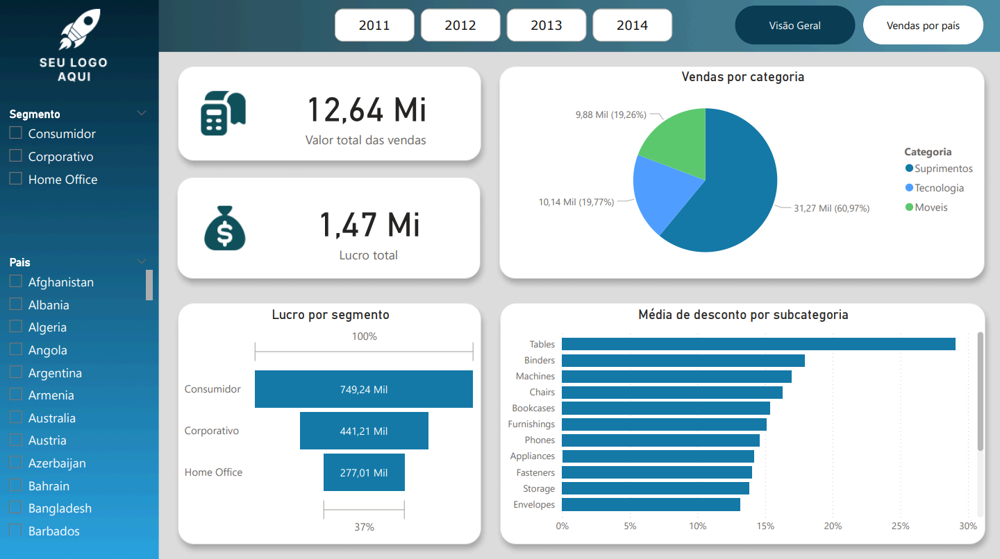
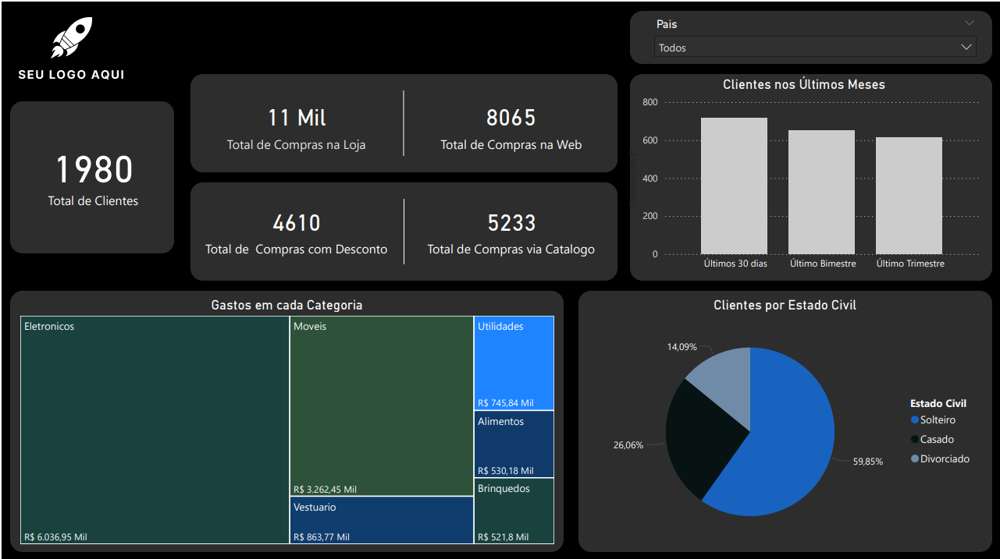
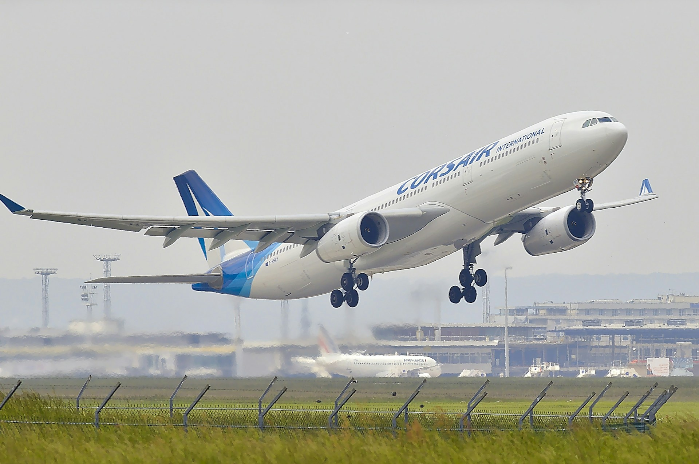

Data Science & Analytics
Transformando Dados em Visão Estratégica.
Descobrindo insights ocultos e impulsionando decisões de negócios.
Sobre Mim
Sou um Cientista/Analista de Dados apaixonado por extrair valor da informação.
Com foco em negócios, atuo em todo o ciclo de vida dos dados, desde a coleta e estruturação até a visualização e modelagem preditiva.
Formação Acadêmica
Pós-Graduação em Inteligência Artificial e Aprendizado de Máquina
PUC MINAS • 2025 - 2026Especialização em IA e Machine Learning, com foco em desenvolvimento de soluções inovadoras e aplicadas ao mercado.
Graduação em Análise e Desenvolvimento de Sistemas
UNICESUMAR • 2017 - 2020Formação sólida em desenvolvimento de software, com foco em análise e soluções de problemas através da tecnologia.
Experiência Profissional
Analista de Dados/ Desenvolvedor Web
CLAM • 2023 - 2025Desenvolvimento de plataformas na web, dashboards interativos no Power BI, modelagem de dados em SQL e NoSQL e análise de dados usando Python.
Desenvolvimento de Dashboards para Cliente Externo
Desenvolvimento de Dashboards no Power BI para cliente externo.
Análise Exploratória de Dados (APIs)
Análise Exploratória de Dados extraindo dados a partir de APIs externas.
Modelo de Machine Learning para Detecção de Anomalias
Construção de modelo de Machine Learning para detecção de rotas anômalas percorridas pelos veículos da empresa.
Análise de Dados Ambientais
Análise de dados e geração de gráficos para projetos ambientais.
Monitoramento de Frotas em Tempo Real
Criação de sistema interativo para rastreamento veicular, envio de notificações e armazenamento de infrações.
Aplicação Desktop para Relatórios (BI)
Desenvolvimento de software desktop para visualização de dados e estudos estratégicos.
Web Institucional
Manutenção e criação de novas interfaces e páginas utilizando WordPress (Site CLAM).
Projetos pessoais
Dashboards e Análises.

Análise de Vendas
Dashboard interativo para acompanhar o desempenho das vendas da empresa.

Análise de campanhas de marketing
Análise de dados para entender o perfil dos clientes, seus padrões de consumo e a efetividade das campanhas de marketing

Análise de série temporal
Análise detalhada e modelagem preditiva de séries temporais utilizando o dataset Air Passengers.
Modelagem Preditiva de Bilheteria (Regressão Linear)
Desenvolvimento de modelo estatístico para quantificar o impacto do orçamento e da recepção do público no faturamento de produções cinematográficas.
Entre em Contato
Vamos construir soluções guiadas a dados?
Sinta-se à vontade para me contatar. Busco sempre novos desafios e oportunidades de usar os dados a favor do seu negócio.